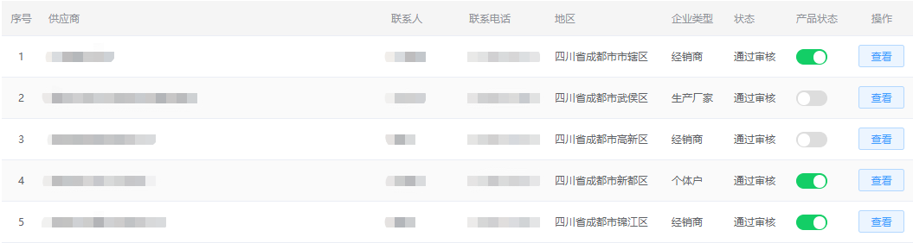

管理员通过老师对于经费的申请，结合学校相关制度要求（手续）等进行留底审核，严格把控线上实验经费的真实性。
简介
“实验技术物质网上服务平台”(以下简称“平台”)是一个以实验室及实验危化品管控为重心,围绕实验用品的购、领、返、销、废、储,涵盖供应商管理与结算、实验经费的管理等多方面的实验室管控综合平台。结合app、小程序后可一站式实现基于"线上采买"、"线上审核"、"线上管控"、"线上对账"等管理的相关工作。
特点介绍
经费管控
库存管控
管理员可以查看任意订单信息，通过使用人对于管控物品购买的申请，结合学校相关制度要求对管控物品的订单进行审核，并且根据相应情况及相关制度对订单进行取消操作，严格把控线上订单信息的有效性

供应商管控
管理员可根据采购合同或直接搜索等方式吸纳供应商。也可由供应商根据本身经营范围，提供相应经营资质后提交加入申请，由管理员进行供应商资质审核评定并验证通过。运用黑名单管理、商品管理等方式对供应商以及线上商品进行管理，严格把控商品在售的合法性。

线上对账
供应商与管理员可以通过该平台实现线上对接账单，并且管理员可根据相关制度及实际情况进行审核及结算。
其他
平台采取pc端、移动端多平台结合，根据不同需求、不同用户、不同权限等多角色进行复合，在各终端提现不同的优势与快捷。本平台针对管控品及日常用品分别体现了“及时申请及时审，随时采购随时看”的时效性。
联系方式：
名称：四川智胜慧安信息技术有限公司
地址：成都武侯区武科东一路7号智胜大厦7楼720室
电话：83232737
test
地址：成都武侯区武科东一路7号智胜大厦7楼720室
电话：83232737